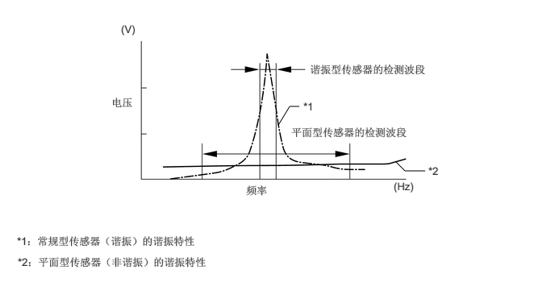
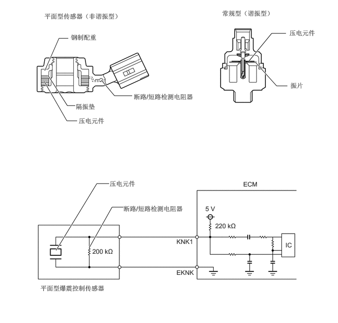
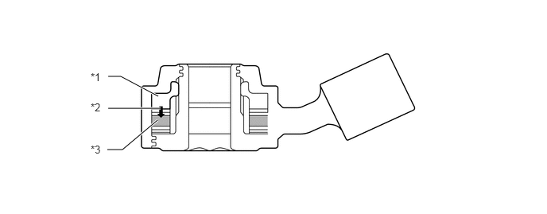

构造
在常规爆震控制传感器（谐振型）中，振片内置于传感器。该振动片的谐振点同气缸体分总成爆震* 频率的谐振点相同。该传感器只能检测到这一波段内的振动。
*：此处术语“爆震”指燃烧室内混合气的早燃或爆燃。早燃或爆燃指混合气点火时间早于最佳点火时间。此处的“爆震”并不单指发动机可能产生的巨大的机械噪音。
平面型爆震控制传感器（非谐振型）能够检测到较宽频段（从约 5 至 23 kHz）内的震动并具有以下特征：
通过安装在气缸体分总成上的双头螺栓，将平面型爆震控制传感器安装在发动机上。因此，传感器中心有一个用于双头螺栓的孔。
在传感器内的上部有一个钢制配重。绝缘垫位于配重和压电元件之间。
断路/短路检测电阻器集成于传感器内。
发动机爆震频率会随发动机转速而产生轻微变化。即使发动机爆震频率发生变化，平面型爆震控制传感器也能检测振动。与常规型爆震控制传感器相比，由于采用了平面型爆震控制传感器，其振动检测能力得到提高，并且可以更精确地控制点火正时。

断路或短路检测电阻器集成于传感器内。将发动机开关置于 ON (IG) 位置时，爆震控制传感器内的断路检测电阻器和 ECM 内的电阻器保持端子 KNK1 的电压恒定。ECM 内的集成电路 (IC) 持续监视端子 KNK1 的电压。如果在爆震控制传感器和 ECM 之间出现断路或短路，端子 KNK1 的电压将发生变化，ECM 会检测到这一变化并存储诊断故障码 (DTC)。

爆震产生的振动传送到钢制配重。钢制配重的振动惯性力将压力施加到压电元件上。该作用会产生电动势。

| *1 | 钢制配重 | *2 | 惯性力 |
| *3 | 压电元件 | - | - |